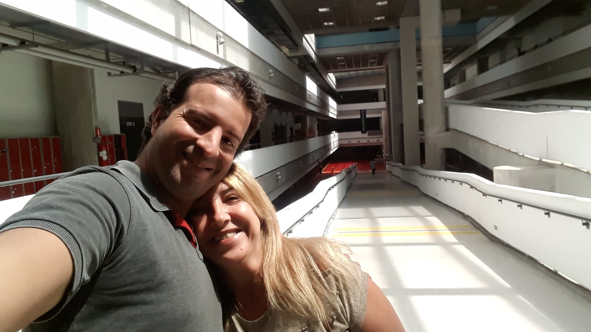
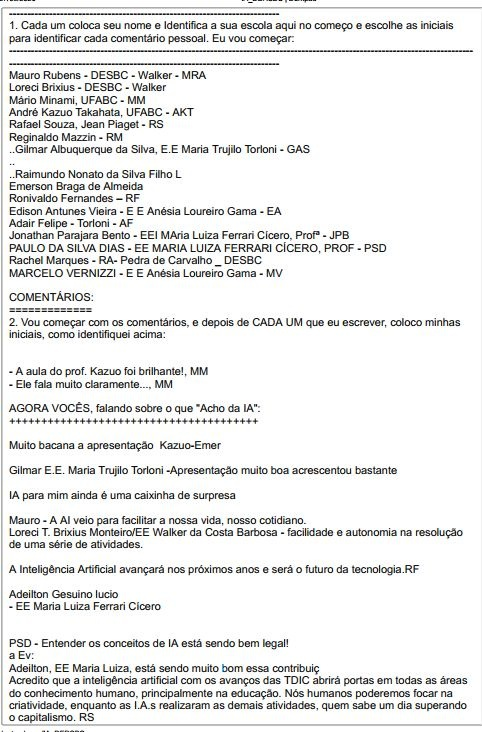

Universidade Federal do ABCUniversidade Federal do ABC
Universidade Federal do ABCUniversidade Federal do ABCParticipamos com os demais colegas da turma de um concurso no qual as duplas construíram robôs com materiais descartáveis.
Já no laboratório de informática do campus UFABC-Santo André, participamos da aula sobre o HTML, onde inserimos textos,imagem, som e vídeo em um arquivo HTML .
nossa foto na ufabc: 
Nessa atividade síncrona, os alunos foram divididos em grupos e realizamos a atividade "Diferentes e Parecidos"

Realizei um Diagrama de Venn baseado na atividade conjunta "Diferentes e Parecidos"

Foi revisada a aula sobre HTML e realizamos uma nova página html
Logo UFABC
Tocador de som abaixo:
Tocador de video abaixo:
Tivemos que criar um escudo heráldico de nossa escola, assim com uma breve descrição de nossa escola
Fundada em 1979 com o nome de Escola Municipal Jardim Detroit, pelo então prefeito Tito Costa, atendia os alunos do Ciclo I. Mas em 1982 passou a ser uma escola estadual voltada para os Anos Finais do Ensino Fundamental, Mudou também seu nome para E.E.Jean Piaget, em homenagem a um dos maiores pedagogos da história.
Outro momento marcante na história de nossa querida escola foi em 2014, quando passou a integrar o Programa de Ensino Integral, sendo hoje uma das melhores escolas de São Bernardo (de acordo com o resultado do IDESP 2019).
Faça parte da nossa família
Facebook do Jean PiagetNa aula foi discutido as inteligencias artificiais e experimentamos a ferramenta Dontpad

Foi realizado um html com texto sobre as A.I.'s e com a imagem utilizando-a
As I.A.'s estão cada vez mais presente na vida de todos nós, como em alguns semáforos de trânsito, aplicativos de smartphones, nas televisões smart e algumas pessoas tem até na geladeira.
Acredito que cada vez mais iremos incorporar as I.A. em nossas aulas, deixando-as mais interessantes. Na sala de aula conto com uma lousa digital que facilita bastante minhas atividades, mas é durante a pandemia que nós, professores e alunos, estamos levando ao extremo, realizando buscas, traduzindo textos, vizualizando imagens de satélite, entre outras funções.
Acredito que as I.A.'s podem ajudar a combater crimes (como de sonegação fiscal), ou mesmo a localizar foragidos da justiça, porém, mas pra isso teremos que sacrificar nossa privacidade.
Google sobre o "Sentido da Vida"
Google contando uma piada sem graça
Dando continuidade a discursão sobre inteligencias artificiais, apontamos vantagens e desvantagens desse tipo de tecnologia, e para isso experimentamos desta vez a ferramenta Google Jamboard.

A atividade foi a construção do "favo de coméia" de uma aula com habilidade escpecífica.

A habilidade que será trabalhada é a (EF08HI16) Identificar, comparar e analisar a diversidade política, social e regional nas rebeliões e nos movimentos contestatórios ao poder centralizado, durante o período regencial do Brasil, que terá como objetivo Analisar os diferentes grupos políticos e seus interesses durantes o período regencial e compreender as particularidades das diversas rebeliões provinciais nesse período.
Será proposto para os alunos a leitura das páginas do livro didático 152 a 167, além da discussão durante uma das aulas sobre as causas da regência.
A atividade tem previsão de três aulas para ser concluída.
Após discutir sobre Lev Vygotsky a sua contribuição no desenvolvimento social cultural, o professor dividiu os alunos em grupos onde o monitor do grupo foi nosso MKO em relção ao próprio desenvolvimento do curso de cyberpedagogia, nosso tutor foi o prof. Suyama, e contou com a participação dos colegas Luiz Valverde; Thais Lopes; Adeilton; Roberto Silveira; Denise Nascimento; Paulo Dias; Maria Antonia; Rodrigo Souza. Entre muitas contribuições, posso destacar a sugestão da professora Maria Antonia, que contou sua experiência com o uso do kit Sopabits.
A atividade consistiu na reflexão do aprendizado participativo, destacando a presença de um MKO - More Knowledgeable Other e a elaboração de uma redação com o título "Qual o valor de..." completando o título com a experiência vivida.

Os alunos foram divididos em grupos para se tirar as dúvidas sobre o eDB e as postagens no FaceBook do grupo.
A atividade é a postagem desse HTML.